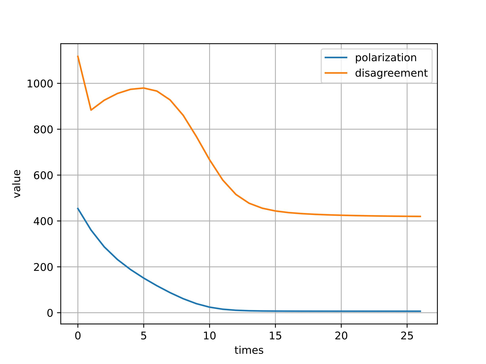
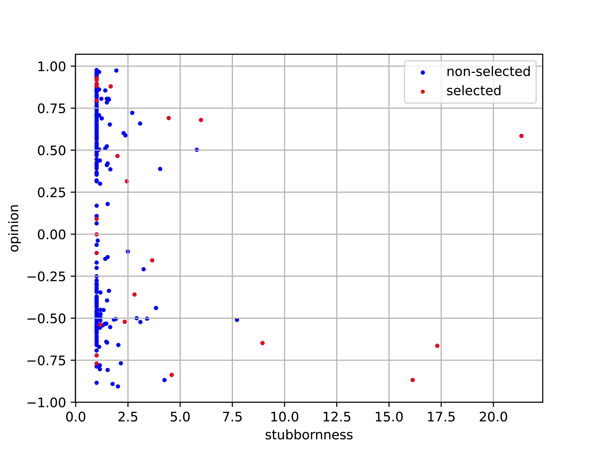

My research experience and projects
1.Social network opinion polarization and disagreement analysis
This is a comprehensive social computing project, which includes web crawler, text sentiment classification,
social network topology and dynamics modeling, mining and optimization.
Task1: We propose a topic-based ensemble learning framework on Bitcoins-related opinion sentiment classification
and construct our own opinion-based social network dataset.


Task2: We propose a network opinion dynamics model which concerns the co-evolution between opinions and
links. Based on the model and our dataset, we analysis and mining the rule of opinion polarization and
disagreement in social network by data-driven method, agent-based mechanism method and GNN method.

Task3: We propose an multi-objective particle swarm optimizer (MOPSO) to minimize the polarization and disagreement in
social network by selecting a small subset of agents (nodes) and allocate them with proper resource. We analysis the performance
of algorithm and the regularity of nodes selection.
Selected achievement
[1] Yuzhi Wang, Weineng Chen *, A Link-Opinion Co-evolution Model with Multi-Objective Particle
Swarm Optimizer for Social Network Conflict Minimization, IEEE Transactions on Computational Social
Systems (TCSS), under review.
[2] Yuzhi Wang *, Yixuan Xie et al. Text Sentiment Classification on Complicated Cryptocurrency
Online Community: A Case Study on Reddit’s Bitcoin Dataset. (Working paper, unsubmitted yet)
2.Traffic distribution prediction based on spatio-temporal feature engineering and ensemble learning
This project involves the dynamic traffic density estimation and prediction method in urban system.
We propose a spatio-temporal framework to construct features and leverage multi-model (RF, XGBoost, LSTM, Transformer)
ensemble learning, autoregressive time-window filter to improve the prediction performance. We also analysis the robustness
of our model and algorithm and visualize the project.